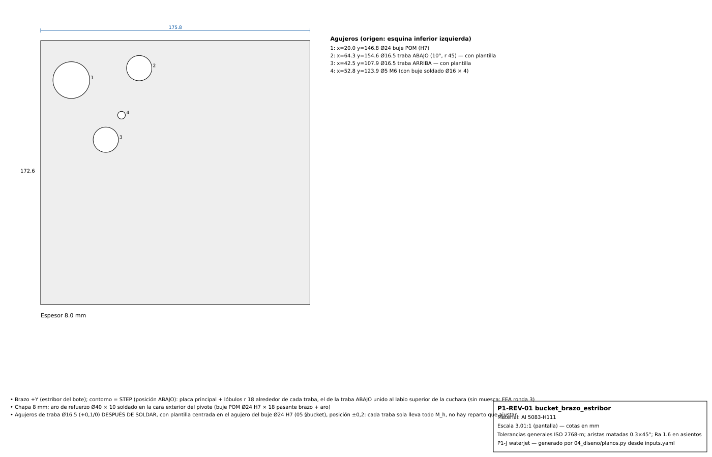

Plano P1-REV-01 bucket brazo estribor
Bucket de reversa Al 5083 8 mm (cuchara + brazos + nervio), traba en cada brazo (cada una lleva todo M_h) · Al 5083


En el teléfono: tocá «Ampliar» y deslizá con el dedo dentro del recuadro, o pellizcá para hacer zoom.